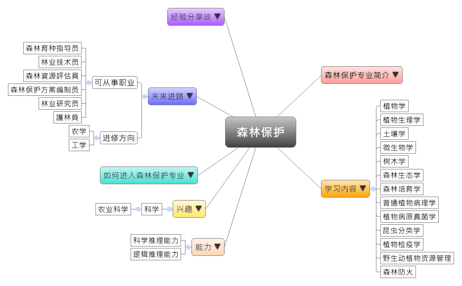

- 专业大观园
-

- 专业介绍
-
什么是森林保护？
森林保护是指预防和消除森林的各种破坏和灾害的措施，保证树木健康生长，避免或减少森林资源损失的重要措施。森林保护的主要重要环节包括预防和消除森林火灾、林木病虫害、林木鸟兽害以及灾害性天气对森林的损害。森林保护主要以预防为主，当灾害发生后积极除治。森林保护方针为“预防为主，科学防控，依法治理，促进健康。”病、虫、火、鸟、兽、气象等因子都是森林生态系统的组成部分，森林保护专业首重各影响因子的相对平衡，这是控制灾害发生的关键。在职场上，具有此专业有助于造林、提升造林质量，改善森林生态系统；在生活中，则能对于正确且深入地了解森林灾害，以及相对应的防治措施，集全民之力降低天灾与现代化污染对地球造成的伤害。
森林保护专业主要培养具备森林资源保护、森林资源调查与管理、林政管理与执法等方面的知识和技能的高级技术应用性专门人才。

树木病理学野外觀察課程 
野生动植物资源管理課程
- 学习内容
-
森林保护专业学生主要学习现代林业基础科学、林业有害生物生物生态学和科学防控等方面的基本理论，掌握森林生物的鉴定、有益生物利用的基本知识，具备林业有害生物种群动态监测、森林植物检疫和有害生物综合管理等基本技能。
本专业学习方向有林学、森林保护学、生物学、生态学。森林保护专业主干课程有：植物学、植物生理学、土壤学、微生物学、树木学、森林生态学、森林培育学、普通植物病理学、植物病原真菌学、昆虫分类学、树木昆虫学、农药学、植物检疫学、普通动物学、野生动植物资源管理、森林防火。实践教学的环节有普通昆虫学实验、树木病理学实验、农药学实验、实习、课程设计、毕业论文等，一般安排25至30周。
本专业可以习得的知识与获得之能力、技能列点：第一、掌握生物学、地理学、林学、旅游管理学科的基本理论、基本知识；第二、掌握森林资源开发及评价、森林公园总体规划设计方法、森林产业市场动态分析方法；第三、具有监测森林资源、森林资源保护和森林生态公众教育的基本能力；第四、熟悉我国有关森林资源保护、林政管理、旅游的基本方针，以及国内外森林资源保护、旅游管理等应用前景与发展动态。
- 能力
-
森林保护专业学生，需具备以下能力：
相关性向能力 说明 科学推理能力  熟悉森林形成、发展、保护与资源再生的研究
熟悉森林形成、发展、保护与资源再生的研究
能监测森林有害生物的种群动态，以及进行森林植物检疫
具备预防和消除森林火灾、病、虫、鸟兽危害，以及天气性灾害对森林的损害逻辑推理能力 了解危害森林生态系统的因素
理解森林保护与人类生活环境的关系创意能力 运用现代科技降低人类对森林的负面影响
依据不同环境选用合适林种，提升造林的成效
- 兴趣
-
若你对下列活动或事物有高度兴趣，可考虑进入森林保护专业学习：
科学 农业科学 对于在森林或野外从事工作感兴趣
对于关怀地球环境议题与事物感兴趣
对于认识微生物与昆虫等相关活动感兴趣
- 如何进入此专业
-
下面列举开设森林保护专业的211工程重点大学院校：
- 未来进路
-
可从事职业
近年，国家对农林业十分重视，政策方面也不断传来“利好”消息，虽然农林类毕业生总体就业形势比较严峻，但情况正在日益好转。森林保护专业的毕业生能在林业、农业、环境保护等相关行业的政府机构、企事业单位从事森林培育、森林资源保护、管理与利用、林业生态建设及管理等工作，也可在高校从事教学工作。森林保护专业的就业范围较窄，毕业生可就职于林业局、林业站、森林公园、自然保护区、环保等单位，从事森林资源调查与资产评估、森林及园林绿化植物的病虫害防治、护林防火、自然保护区和森林公园管理等工作。在工作职场上皆能发挥护林防火、生态建设等专长：
行业 职业 农、林业
（园林公司、种苗公司）森林育种指导员、林业技术员、销售人员、苗圃技术员 环保 森林資源評估員、森林保护方案编制员 教育、培训 教师 政府、公共事业（林業局、林业站、森林公園、自然保護區） 行政人员、管理人员、林业研究员、護林員 进修方向以下列举森林保护专业毕业生可以继续修读之学科门类、一级学科与硕士点：
学科门类 一级学科 硕士点 农学 林学水土保持与荒漠化防治、森林培育、森林经理学、森林保护学、林木遗传育种、自然保护区学、森林防火、园林植物保护 植物保护生态安全、植保经济学 林业硕士林业硕士 风景园林学风景园林规划设计、风景区规划与管理 工学 林业工程森林工程、林业工程、森林防火 风景园林学园林艺术设计、景观艺术与设计
- 经验分享谈
-
教书育人的实践家——周章义
周章义1955年毕业于华中农学院中等林业技术班，并分配到贵州省林业厅长坡岭林场工作一年。1960年毕业于北京林业大学林业专业，并留在森保专业，承担森林昆虫学的教学任务至退休。
周章义主攻林木抗虫原理与应用的研究。曾主持“六五”、“七五”、“八五”国家攻关课题中木业措施控制松毛虫、天牛灾害等课题，有不少创新与突破。他系统研究了油松的诱导抗性，1990年经林业部组织国内权威专家鉴定，获“在林木抗虫机制及用综合措施诱导油松抗性方面的研究，居国际领先水平”的好评。退休后，他曾主持“京郊古油松生长衰退原因、复壮措施及其树势探测技术的研究”、主持黑松大面积死亡原因及其对策的会诊、对我国沙棘大面积死亡原因及其灾害防治进行调查研究，以及主持“松黑木吉丁虫首次在我国北京成灾的条件、机理与防治方法的研究”等任务。周教授的研究首次探明河滩沙棘林抗沙棘木蠹蛾的机理，首次探明松黑木吉丁在我国首次成灾的条件与机理。
周章义除了被国际IUFRO组织列入世界森林病理、昆虫学专家名录内，更曾多次荣获国家科学进步奖、部（省）级科学进步奖，以及林业部“教书育人成绩显着”称号。他常深入林区，不仅丰富了实践知识，还抓住了生产中主要问题，并将其分析、归纳、提高后呈现在学生面前，使学生与生产接近。 【资料来源：校友风采 周章义教授[EB/OL].北京林业大学林学院，2012-10-09】